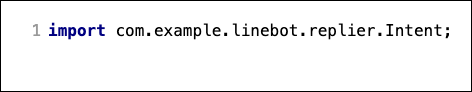

ここでは、 13:15に授業 などのように時間と用件をLINEBotに話しかけると、それをリマインダの登録要求として識別し、データベースに記録する部分を作成する。
まず、ユーザのメッセージから、ユーザが何を要求しているのかの意図（これをインテントと呼ぶ）を識別する 必要がある。インテントを識別したら、メッセージから データベースに記録するデータを作 し、実際に データベースのテーブルに記録 する。
ポイント
- インテントをJavaの Enum(列挙型) で作成する
- インテントの識別は 初歩的な方法として正規表現で識別 をする
- インテントを識別したメッセージから 時間と要件を分離し、データベースのテーブルに記録するためのデータを作る
- LINEBotの制御にも使っている Spring フレームワークの機能で、テーブルを作成し、テーブルにデータを記録する
このChatBotで識別できるIntentを定義する。
Javaでは、システム内で変わらない定義や定数に Enum （列挙型）と呼ばれる特別なクラスを使う。
Enum を作成する
com.example.linebot.replier パッケージの中に、 Intent Enum を作る。
IntelliJ IDEA では、クラス作成時に 列挙型（Enum） を選べば良い。

作成されるIntent Enumは以下のようになる。通常、 public class XXXX と書くところが、public enum XXXX になっていることに注目。

Intent Enum の内容を次のように書き換える。
ポイント
^(\d{1,2}):(\d{1,2})に(.{1,32})$ は、13:15に授業、 16:55にバス などのように、XX:YYに〇〇 という文字列かどうかを判別するための正規表現パターンである。
- XX, YY は最大2文字の数字。〇〇は最大32文字の文字列を想定
- 文字列のパターンに当てはまれば、メッセージが「リマインダを登録したい」ものだと判断する(
REMINDERを使う) - 文字列のパターンに当てはまらない時は、通常のメッセージだと判断する（
UNKNOWNを使う） - Javaコードでは \ が一つ増える:エスケープすることに注意
makeIntent メソッドは static メソッド のため、インスタンス化しなくても呼び出せる （詳しくは次ページ）。
Callbackクラスの handleMessage メソッドで、Intentを使った話題の判断をする。
Callback クラス に Intent Enum の import に加える

Callback クラスの handleMessage メソッドの中身を書き換える
Callback クラスの handleMessage メソッドの中身を書き換える。
これまでの処理はコメントアウトして残しておいても良いし、削除して画像と同じように置き換えても良い。

ポイント
- 変更前は、送信された text を使ったswitch文で、返答内容に使うクラスを切り替えていた。
- 変更後は、Intentクラスに作成した makeIntent メソッド（static メソッド）を使い、
Intent.makeIntent(text)を実行して、textのパターンから Intent (つまり、REMINDERorUNKNOWN) を得る。 さらに、switch 文の引数をString textからIntent intentに切り替えたことで、 intent =REMINDERの時と、UNKNOWNの時で、処理を切り替える。
動作確認
LINEBot としてプログラムを起動し、 13:15に授業, こんにちは などを送信してみる。